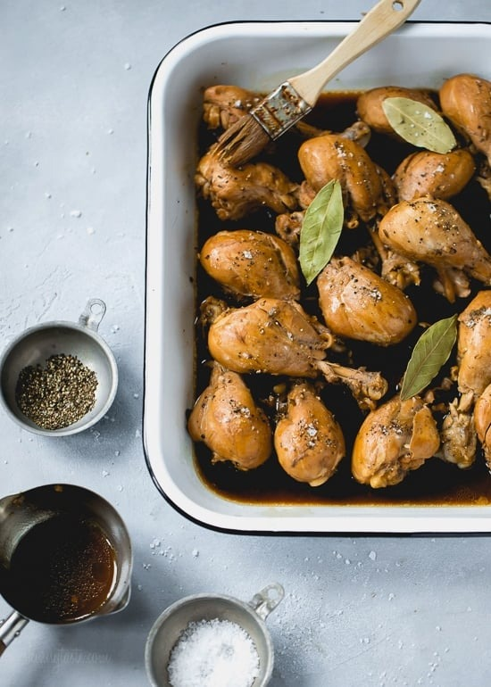

A recipe for chicken adobo!

Description:
Here's a recipe for chicken adobo I found at
https://www.skinnytaste.com/filipino-adobo-chicken/.
I always liked chicken adobo so I figured I might as well
review how to cook it.
Ingredients:
- 8 chicken drumsticks, on the bone, skin removed
- 1/3 cup low sodium soy sauce, use gluten-free soy sauce for GF and coconut aminos for Paleo
- 1/3 cup apple cider vinegar
- 1 small head of garlic, crushed
- 6 ground peppercorns
- 4 bay leaves
- 1 jalapeño, chopped (optional)
Steps:
- Marinate chicken in vinegar, soy sauce, garlic, jalapeño and pepper, for at least an hour (overnight is ideal).
- Put chicken, 1/2 cup water, bay leaves and marinade into a deep nonstick skillet and cook on medium-low heat. Cover and cook until the meat is tender, about 45 minutes.
- Remove the cover and cook an additional 15 minutes, until the sauce reduces.
- Discard bay leaves and serve over rice if you wish.
Bon Appetit!